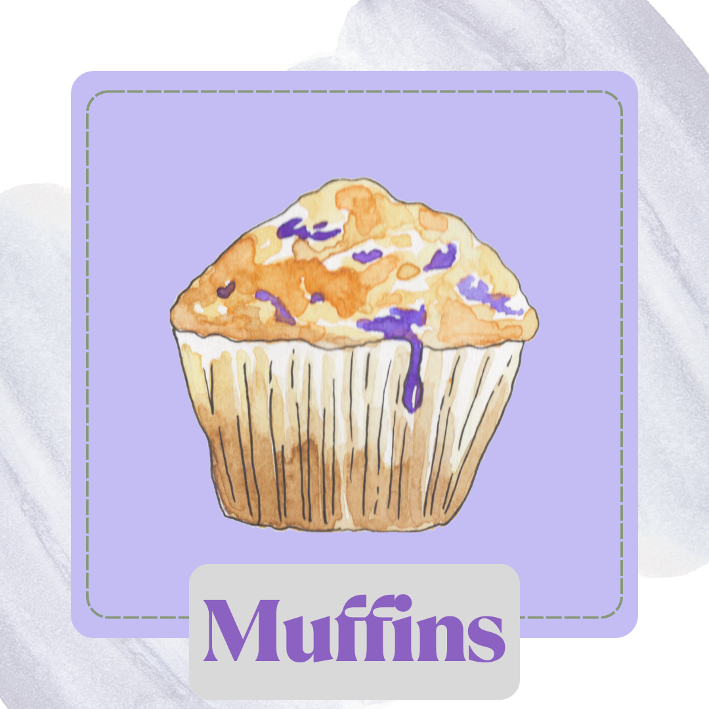

Muffins

Description
These muffins are made up. I don't know a recipe, so please don't try baking this. The science will be bad.
I warned you.
Ingredients
- 1 1/2 c. flour
- 1/2 tsp baking soda
- pinch of salt
- 1 stick of butter, melted
- 3/4 c. of sugar
- 1 tsp vanilla
- 1 1/2 c. buttermilk
- *Mix ins* 1 c. of chocolate chips or berries of your choice
Steps
- Preheat Oven to 350 degrees F and grease muffin pans
- Mix all dry ingredients in large bowl
- Mix wet ingredients in a smaller bowl
- Add the wet to dry
- Mixing as little as possible, combine all ingredients into batter, adding mix ins before it's completed
- Less mixing results in less glucose production in the batter, leaving the result to be lighter textured muffins
- Pour batter into muffin pans, cups optional
- Bake at 350 for 45-55 minutes
- It is done when a toothpick can be inserted and removed cleanly from center
- Serve warm with butter and enjoy :D